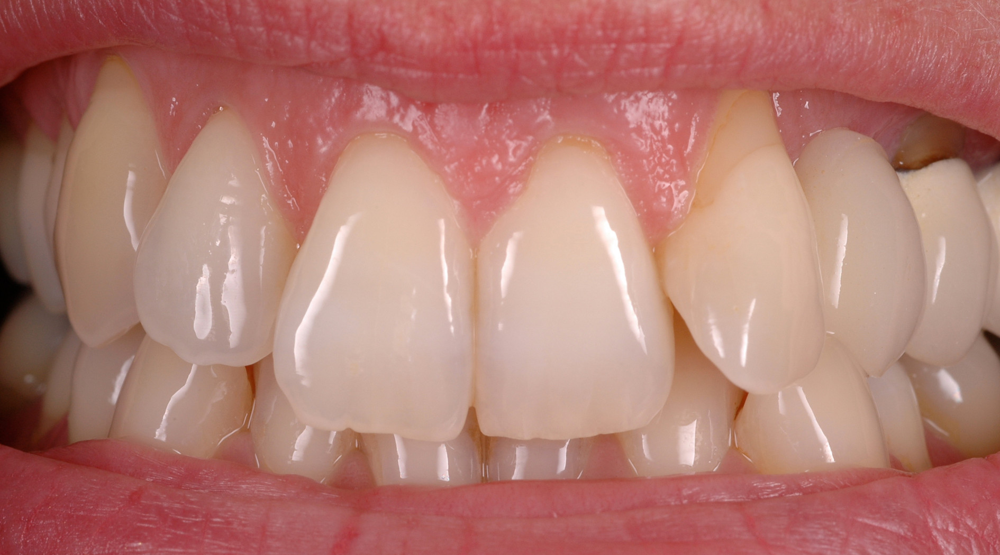
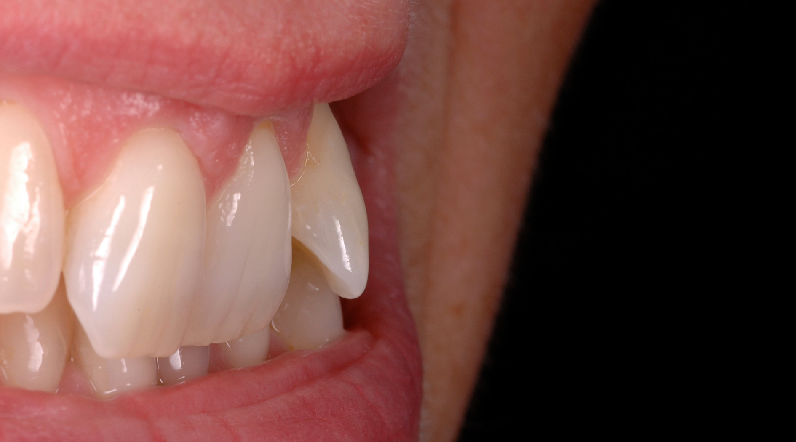
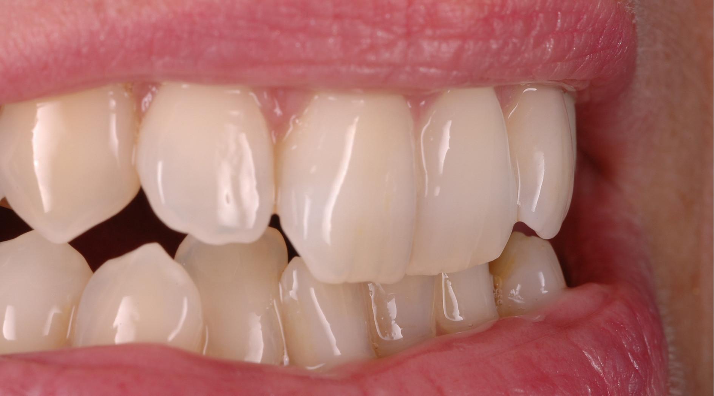

All-ceramic Restoration
All-ceramic restorations include veneers, all-ceramic crowns, inlays, onlays, partial crowns and many hybrid constructions. The various usable materials have all the required specifications like flexural strength, colour and transparency. All–ceramic restorations can be made by milling, pressing or sintering. The choice of different all–ceramic systems are subjected to certain indications. We recommend in a personal consultation with the patient and the dentist the ideal solution for an aesthetic and functional all–ceramic restoration.
Case 1: All – Ceramic Crown 21 & 12


Case 2: All – Ceramic Crowns 11 & 21


Case 4: Amelogenis Imperfecta
Same clinical situation as case 3 but a different patient.


Case 5: 4 New Front Crowns 12 – 22
before

after

Veneers
Porcelain veneers are designed to close gaps between teeth, to restore function, correct discoloration and misalignments. To create a tooth like all – ceramic restauration many individual work steps are required. The morphology (shape of the tooth) with all the different colour characteristics have to be reproduced. The making of such restorations can be done in a minimalistic invasive or a non-invasive way.
Work flow
The following pictures show a couple of work steps, how an individual crown build up is done.


Case 6: Veneer 11 to correct the shape and the tooth colour

Case 7: Feldspathic Veneer 22 to correct form and colour
before 
before 
after

after 
Inlays / Partial Crowns
Inlays and partial crowns correct small defects and misalignments in the front and posterior region. Different techniques and materials can be used to make the restoration to fit perfectly in the upper or lower arch.
Case 8: Inlay 46


Case 9: Partial Crowns
All of the upper posterior teeth 14 – 17; 24 – 27 have been covered with partial crowns.
before

after

Metal Ceramic
One of the oldest techniques in crown and bridge is the metal ceramic. The porcelain is fused to a high gold, biocompatible alloy. The physical and aesthetical qualities have been dramatically improved over the past years. In trying to make a crown like a natural tooth has metal ceramic similar properties for example comparable strength and an identical abrasion behaviour to the antagonist. Perfectly made metal ceramic crowns and bridges cannot be told apart from an all-ceramic restoration.
Case 10: 2 New Single Front Crowns 11 21


Case 11: 4 New Single Front Crowns 12 – 22


Oxide ceramic
Oxide ceramic also known as zirconium (di)oxide or zirconia can be used as substructure for crowns and bridges instead of conventional metal framework. These materials are already successfully used in industry and medicine to guarantee a long-term success with that material it is very important to know all its physical properties. Oxide ceramic has also its limits and these should not be exceeded.
Case 13: A veneer and 3 all-ceramic crown on the incisors


Case 14: A complete all-ceramic treatment on the upper jaw


Implants
Dental implants are used to replace missing teeth. The implant fixture is placed in the bone then a dental prosthetic is added these can be crowns or bridges. More as one dental implant can also be placed to hold a bridge in place or for a removable restoration. Are there no teeth existing anymore, implants can be placed if surgical requirements are met.
We guarantee an aesthetic, functional and ideal treatment result. We only use implant parts from well established, well-known companies with the highest quality like: Nobel Biocare, Branemark Replace Select, Friadent and Straumann.
Implants can be made of precious metal alloys, titanium or zirconia. Zirconia implants are individually manufactured with modern CAD/CAM technologies. On top of the zirconia abutment will then be an all- ceramic crown attached.


Case 16
Both central incisors: the Implant on the right and the all-ceramic crown on the left sight.


Case 17: an implant on the right side

Case 18: a single implant